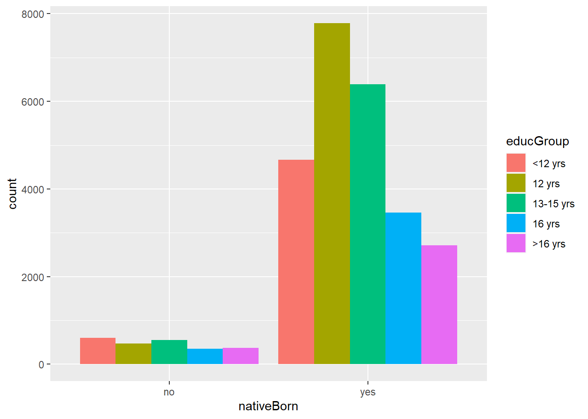
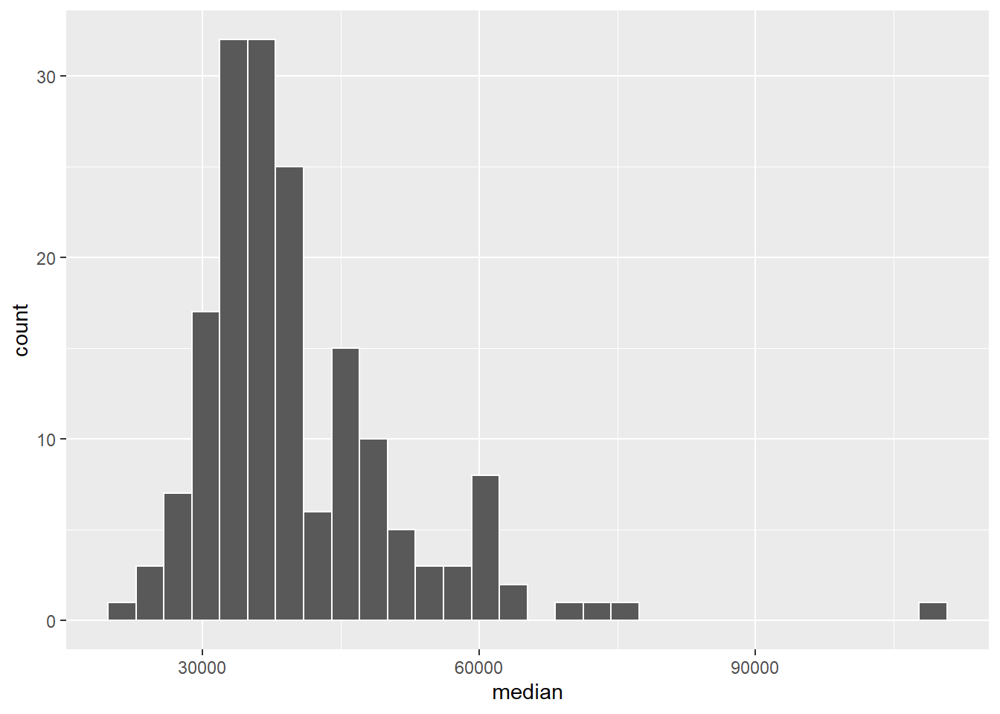
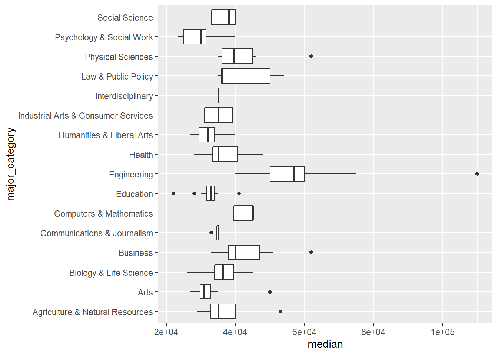
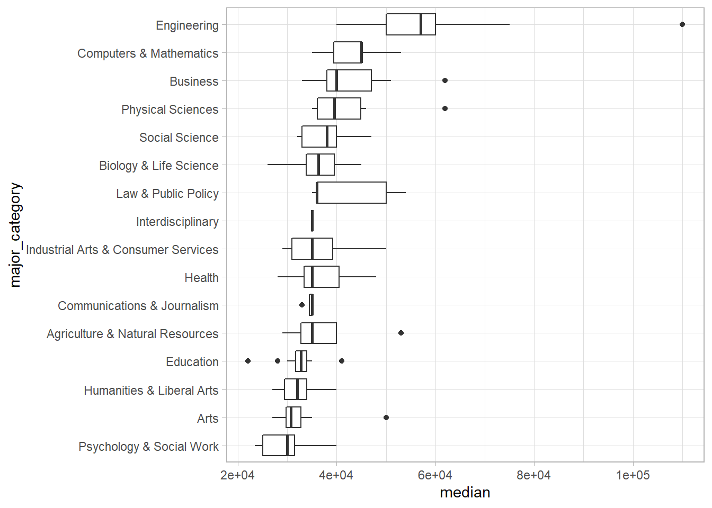
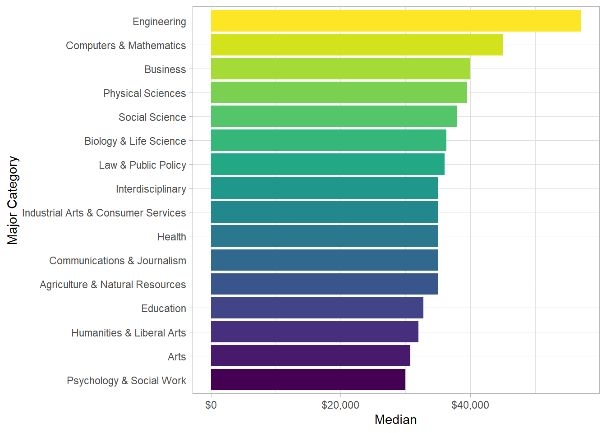
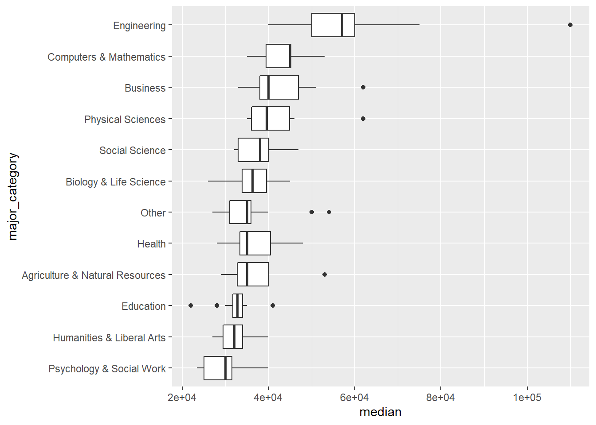
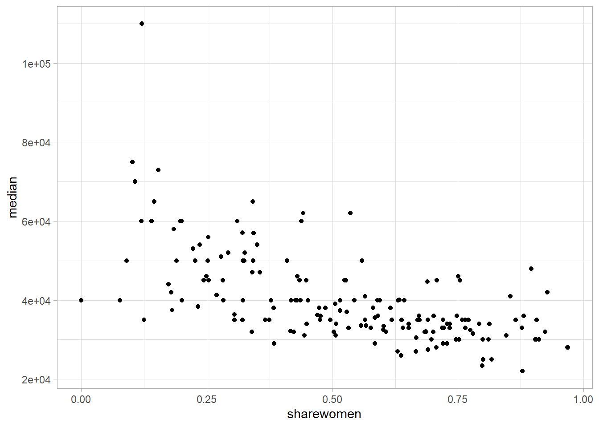
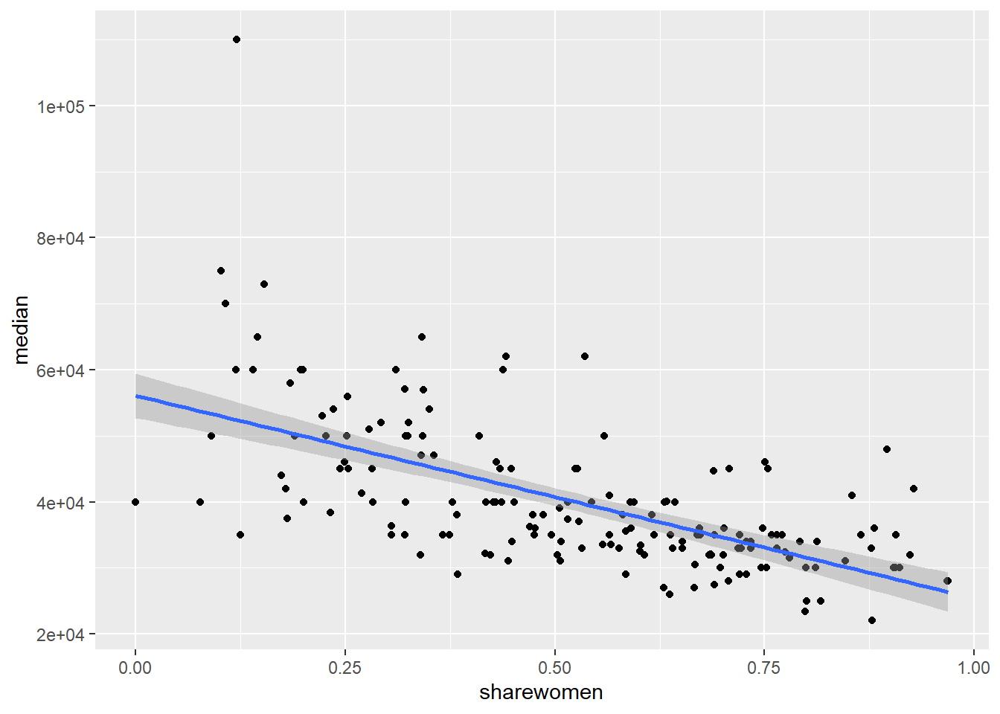

Welcome to the OAME Presentation MDM4U As Data Science. This section of the talk can be referenced through a webpage on the domain highschoolteach-r.netlify.com. See the tab titled OAME - Live. This site was built entirely using R, and trust me, I have no idea how to actually build a webpage, so it shows you how easily this can be created using some simple steps and tutorials. I’ve used some resources to help along the way, but in general, I am using RMarkdown to produce html documents when I click the “knit” button at the top.
You can follow along at https://highschoolteach-r.netlify.app/ if you select OAME - Live in the top menu.
Lets’ go…
The first thing we need to do is load the libraries that we will need to work with in R. Since you’re working with the Cloud version, I loaded these for you. One huge advantage of using the cloud version of R is that the instructor has control over this. Starting out using the cloud version is your safest bet since it only requires a browser to use. Please watch this webinar by Dr. Mine Çetinkaya-Rundel for information on this. The libraries give us access to the functions and files within them. Each library offers it own special group of functions. The underpinning of working (intelligibly) with R is the tidyverse set of packages and language. This is the foundation of the newer, more intuitive R commands that many in the data science field use, and those that we’ll use to do our work today.
In order to access data, we’ll also be using carData package, which is used to accompany a book titled An R Companion to Applied Regression, 3rd Edition, Sage (2019) carData: Companion to Applied Regression Data Sets.
In addition to the data from this textbook, you’ll get a taste of some other data from the wild when we take a peak at the data from a FiveThirtyEight.com article. One of the benefits of R is that it allows us access to data, resources, and functions that others have used.
library(tidyverse)
library(carData)
library(knitr)
library(fivethirtyeight)
library(broom)For the purpose of today’s chat, we’ll look at the data collected from the US General Soceity Survey from the National Opinion Research Centre of the University of Chicago.
GSSvocab # Use the Viewer, summary, glimpseBased on the data, we can see there are entries for the year, the gender, whether born in US, the age group, the education group, vocab, age, and education.
Let’s begin to explore and summarize the data using the count function.
GSSvocab %>%
count(educGroup)## # A tibble: 6 x 2
## educGroup n
## <fct> <int>
## 1 <12 yrs 5924
## 2 12 yrs 8612
## 3 13-15 yrs 7182
## 4 16 yrs 3914
## 5 >16 yrs 3154
## 6 <NA> 81Maybe, based on these counts, I want to see whether there is a relationship between two categorical variables. Let’s take a look at whether being native born seems to have some association with one’s education group?
GSSvocab %>%
group_by(nativeBorn, educGroup) %>%
summarise(n = n()) # n() counts the number of observations of each factor## Warning: Factor `nativeBorn` contains implicit NA, consider using
## `forcats::fct_explicit_na`## Warning: Factor `educGroup` contains implicit NA, consider using
## `forcats::fct_explicit_na`## Warning: Factor `nativeBorn` contains implicit NA, consider using
## `forcats::fct_explicit_na`## # A tibble: 18 x 3
## # Groups: nativeBorn [3]
## nativeBorn educGroup n
## <fct> <fct> <int>
## 1 no <12 yrs 690
## 2 no 12 yrs 520
## 3 no 13-15 yrs 586
## 4 no 16 yrs 369
## 5 no >16 yrs 381
## 6 no <NA> 10
## 7 yes <12 yrs 5215
## 8 yes 12 yrs 8067
## 9 yes 13-15 yrs 6583
## 10 yes 16 yrs 3538
## 11 yes >16 yrs 2765
## 12 yes <NA> 56
## 13 <NA> <12 yrs 19
## 14 <NA> 12 yrs 25
## 15 <NA> 13-15 yrs 13
## 16 <NA> 16 yrs 7
## 17 <NA> >16 yrs 8
## 18 <NA> <NA> 15It looks like we’re dealing with missing data, so let’s filter the data to only include data that is included. R has many convenient commands that allows us to remove the NA values.
GSSvocab %>%
drop_na() %>%
group_by(nativeBorn, educGroup) %>%
summarise(n = n())## # A tibble: 10 x 3
## # Groups: nativeBorn [2]
## nativeBorn educGroup n
## <fct> <fct> <int>
## 1 no <12 yrs 597
## 2 no 12 yrs 475
## 3 no 13-15 yrs 548
## 4 no 16 yrs 353
## 5 no >16 yrs 369
## 6 yes <12 yrs 4667
## 7 yes 12 yrs 7784
## 8 yes 13-15 yrs 6394
## 9 yes 16 yrs 3461
## 10 yes >16 yrs 2712Let’s visualize this in a plot. Let’s use a bar plot to see the relationship between the distribution of education levels across these two groups. From this data, we have a decent understanding of how to look at the relationships between categorical variables. Now, we’re going to take a dive into the relationship between different types of variables related to the wages that recent college graduates earn.
GSSvocab %>%
drop_na() %>%
ggplot(aes(x = nativeBorn, fill = educGroup))+
geom_bar(position = "dodge") #change to fill after
One perk of using R is that many organizations offer open data that are stored in R. We can use the fivethirtyeight package to use investigate some of the data that the website fivethirtyeight.com uses for its stories. In fact, most of the journalists who are using data to report their stories offer open access to their repositories and code. For instance, FiveThirtyEight uses this website for its repositiory. Much of the data is also stored on a GitHub repository for others to replicate analysis.
Let’s look at a dataset of a sample of recent college graduates and is used to produce this article. In order to access the data, let’s call it using R. Then, we can inspect the data, and hopefully come up with a question to answer.
college_recent_grads # %>%
# View()Let’s take a quick look at the basic metrics for the median variable. The median wage of the college graduates who were sampled. There are 173 majors included here. First, a histogram. From this, we can describe its shape, centre, and spread. I’ve added a colour outline to make the bins more obvious.
college_recent_grads %>%
ggplot(aes(x = median))+
geom_histogram(colour = "white")
Shape: There are some obvious outliers to the right, and it is skewed-right.
Centre: The median appears to be around $35,000.
Spread: The spread is high relative to the median.
Now, let’s find some actual values for these using summary statistics. You’ll find this code is very intutive in regard to the way we think about computing statistics. We can alse use the summary() function for these.
college_recent_grads %>%
summarise(mean = mean(median),
med = median(median), #careful naming your variables here
sd = sd(median),
iqr = IQR(median))## # A tibble: 1 x 4
## mean med sd iqr
## <dbl> <dbl> <dbl> <dbl>
## 1 40151. 36000 11470. 12000It might be a good idea to investigate some of the outliers and relationship between the high and low median salaries. Let’s see if there’s a pattern with another variable? Let’s look to see if maybe we can see something with the major category variable.
college_recent_grads %>%
count(major_category, sort = TRUE)## # A tibble: 16 x 2
## major_category n
## <chr> <int>
## 1 Engineering 29
## 2 Education 16
## 3 Humanities & Liberal Arts 15
## 4 Biology & Life Science 14
## 5 Business 13
## 6 Health 12
## 7 Computers & Mathematics 11
## 8 Agriculture & Natural Resources 10
## 9 Physical Sciences 10
## 10 Psychology & Social Work 9
## 11 Social Science 9
## 12 Arts 8
## 13 Industrial Arts & Consumer Services 7
## 14 Law & Public Policy 5
## 15 Communications & Journalism 4
## 16 Interdisciplinary 1It looks like there are 16 categories. Let’s take a quick look at a boxplot for the median salary of each major category. This is a great way to compare distributions.
college_recent_grads %>%
ggplot(aes(x = major_category, y = median))+
geom_boxplot()+
coord_flip()
Note that it’s difficult to detect any systematic pattern, so we’ll try and create an ordered list of categories so that we can look for some patterns. If we arrange the categories in order of median salary, we may find some patterns.
college_recent_grads %>%
mutate(major_category = fct_reorder(major_category, median)) %>%
ggplot(aes(x = major_category, y = median))+
geom_boxplot()+
coord_flip()+
theme_light()
Here’s another way to find the same information, and I made this plot a little more presentable with some titles and colours.
college_recent_grads %>%
group_by(major_category) %>%
summarise(med = median(median)) %>%
ungroup() %>%
mutate(major_category = fct_reorder(major_category, med)) %>%
ggplot(aes(x = major_category, y = med))+
geom_col(aes(fill = major_category))+
coord_flip()+
theme_light()+
scale_y_continuous(labels = scales::dollar_format())+
scale_fill_viridis_d()+
theme(legend.position = "none")+
labs(x = "Major Category",
y = "Median")
Back to the boxlot. Another issue is that we have 16 categories, and some with only a few majors. Let’s group together interdisciplinary, comms & journ, Law & PP, Ind Arts & CS, and Arts together. That will give us 11 categories and an “other” category. (Let’s work on making this plot a more pleasant in the live session) I’d recommend having your students work with some plots that already exist and modifying them slightly in order to get a handle on the code that changes plots.
college_recent_grads %>%
mutate(major_category = fct_lump(major_category, 11)) %>%
mutate(major_category = fct_reorder(major_category, median)) %>%
ggplot(aes(x = major_category, y = median))+
geom_boxplot()+
coord_flip()
Lastly, let’s look at whether there’s a relationship between the share of women in the major and the median salary in the field. To do this, we can correlation and a plot to get a sense of what this looks like.
college_recent_grads %>%
#mutate(median = median/1000) %>%
#mutate(major_category = fct_reorder(major_category, -median)) %>%
select(major_category, sharewomen, median, major) %>%
ggplot(aes(x = sharewomen, y = median))+
geom_point()+ # also add in colour here
scale_color_viridis_d()+
theme_light()
#geom_smooth(method = "lm") Don't forget to add +This is a trend that we may want to investigate because it looks like there’s a reasonable association here. The median salary has a moderate, negative and linear relationship with the share of women who are in the field.
Let’s try and fit a model here. Before we fit, we check to see the correlation coefficient between the two variables.
college_recent_grads %>%
select(sharewomen, median) %>%
cor(use = "complete.obs")## sharewomen median
## sharewomen 1.0000000 -0.6186898
## median -0.6186898 1.0000000Now, let’s show a linear model on the data.
college_recent_grads %>%
select(sharewomen, median) %>%
ggplot(aes(x = sharewomen, y = median))+
geom_point()+
geom_smooth(method = "lm")
Now, let’s find the model terms and the statistics of the model.
college_recent_grads %>%
select(sharewomen, median) %>%
lm(median ~ sharewomen, data = .) %>%
tidy() %>%
kable()| term | estimate | std.error | statistic | p.value |
|---|---|---|---|---|
| (Intercept) | 56093.31 | 1705.115 | 32.89708 | 0 |
| sharewomen | -30669.94 | 2987.010 | -10.26777 | 0 |
college_recent_grads %>%
select(sharewomen, median) %>%
lm(median ~ sharewomen, data = .) %>%
glance() %>%
kable()| r.squared | adj.r.squared | sigma | statistic | p.value | df | logLik | AIC | BIC | deviance | df.residual |
|---|---|---|---|---|---|---|---|---|---|---|
| 0.382777 | 0.3791463 | 9030.918 | 105.4272 | 0 | 2 | -1809.698 | 3625.396 | 3634.838 | 13864770781 | 170 |